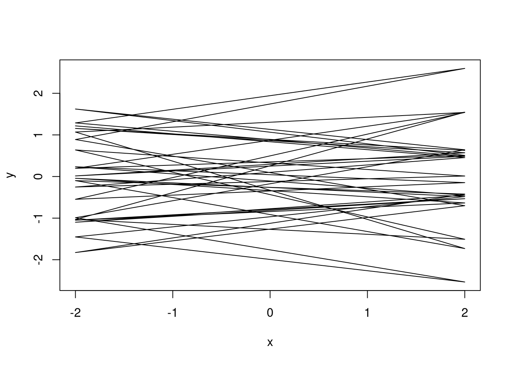
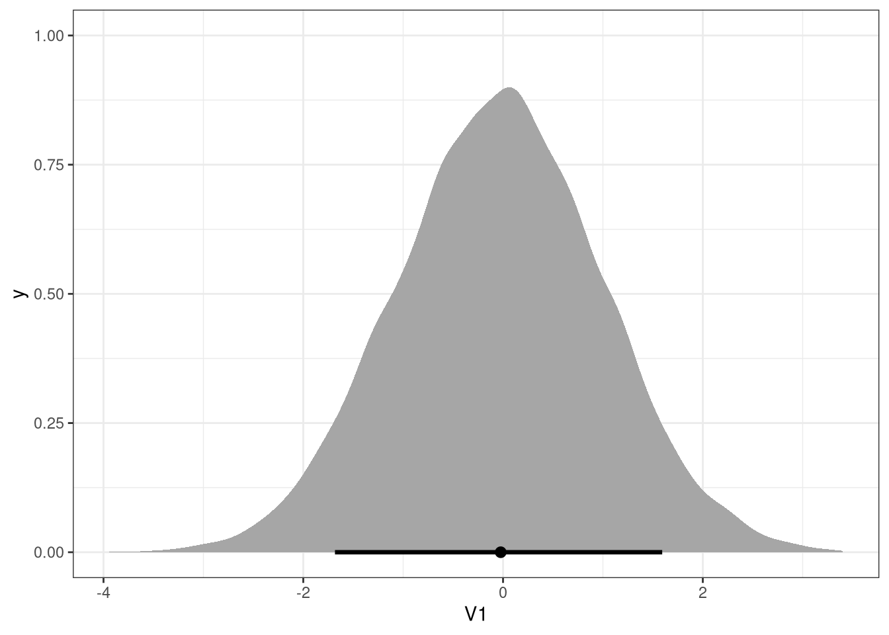

3 Question 1
Use a model to infer the total causal influence of area on weight. Would increasing the area available to each fox make it heavier (healthier)? You might want to standardize the variables. Regardless, use prior predictive simulation to show that your model’s prior predictions stay within the possible outcome range.
3.1 Workings
AREA ON WEIGHT
scale(weight) ~ dnorm(mu, sigma)
mu <- a + b * (scale(area))
a: intercept
when weight and area are scaled, the expected intercept is 0
therefore
a ~ dnorm(0, 0.5)
b: beta, rate of change given one unit of increase in area
b ~ dnorm(0, 1)
sigma: standard deviation
uniform prior
sigma ~ dunif(0, 50)
3.2 Model
library(rethinking)
data(foxes)
foxes$scale_area <- scale(foxes$area)
foxes$scale_weight <- scale(foxes$weight)
m1 <- quap(
alist(
scale_weight ~ dnorm(mu, sigma),
mu <- a + bArea * scale_area,
a ~ dnorm(0, 0.05),
bArea ~ dnorm(0, 0.5),
sigma ~ dunif(0, 50)
),
data = foxes
)3.3 Prior predictive simulation
plot_link <- function(DT, n) {
data.table(DT)[sample(.N, n),
plot(data.table(x = rep(c(-2, 2), .N),
y = c(V1, V2)),
type = 'l')]
}
prior <- extract.prior(m1)
l <- link(m1, post = prior, data = list(scale_area = c(-2, 2)))
plot_link(l, 20)
## NULL3.4 Paths
Interest: Area on Weight
Paths
- Area -> Avgfood -> Weight
- Area -> Avgfood -> Groupsize -> Weight
There are pipes between Avgfood and between Avgfood and Groupsize.
3.5 Interpretation
Would increasing the area available to each fox make it heavier (healthier)?
bArea has a mean of 0.02, with compatibility intervals around 0.
Therefore the model does not indicate an influence of
area on the weight.
precis(m1)## mean sd 5.5% 94.5%
## a 0.000017 0.044 -0.07 0.07
## bArea 0.018892 0.091 -0.13 0.16
## sigma 0.995512 0.065 0.89 1.10post <- extract.samples(m1)
s <- sim(m1, data = list(scale_area = c(-2, 2)), post = post)
library(tidybayes)
ggplot(data.table(s), aes(V1)) +
stat_halfeye(.width = .89)
# TODO: come back to this